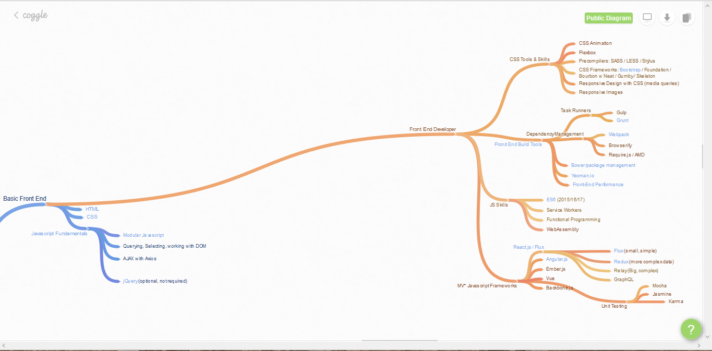
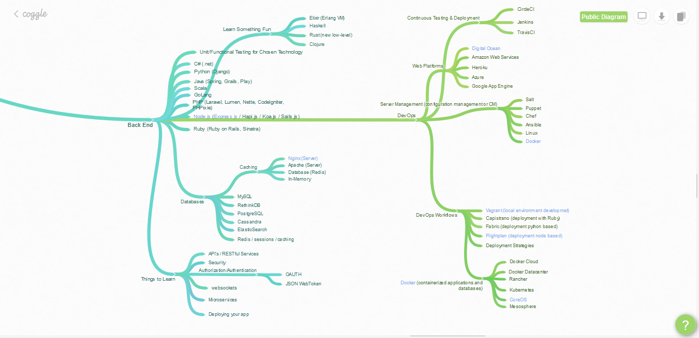

Web-Development

You are here and why should you care?
Web-Development is one of the most hottest andmost lucrative jobs in the job market today. There is always a high demand for highly skilled developers. In india a full stack web-developer gets 60-80k per month.[glassdoor proof -> Full Stack Web Developer Salaries] And well there many reasons, why you should start web-development ASAP.
- You Can Start Part-Time
- You Don't Need An Office
- There Is High Demand For Specialists
- Competitors Are Falling Behind
- The Timing Is Right
- There Are Giants In The Land
- Education Is Readily Available
- Web Development Favors The Young
Let's get Started
There are two branches to full stack web-development.- Front-End Web-Developer
- HTML - the fundamental coding language that creates and organizes web content so it can be displayed by a browser
- CSS - a language that accompanies HTML, and defines the style of a website's content, such as layout, colors, fonts, etc.
- JavaScript - programming language used for more interactive elements like drop down menus, modal windows, and contact forms.
- Back-End Web-Developer
These three languages will do the trick:
Together these essentials create everything that's visually presented when you visit a webpage - whether it's online shopping, reading the news, checking your email or conducting a Google search.
In addition to basic front-end languages, you'll come across frameworks like Bootstrap and Angular, as well as JavaScript libraries like jQuery, and CSS extensions like Sass and LESS. There's a long list of resources like these, which support HTML, CSS, and JavaScript. Their purpose is simply to make code (and the process of writing it) more manageable and organized by providing various tools and templates compatible with common coding languages.
So far, what you have is an example of a static website - its content doesn't really change much. For static sites, all the necessary information that determines what's on the web page is in the frontend code itself. Static websites are good for showcasing things like businesses, restaurants, portfolios, or professional profiles. But if you want to turn your site into something that users can interact with, you'll need to get more in-depth with regard to what's going on behind the scenes of the website.
The backend (or "server-side") is the portion of the website you don't see. It's responsible for storing and organizing data, and ensuring everything on the client-side actually works. The backend communicates with the front-end, sending and receiving information to be displayed as a web page. Whenever you fill out a contact form, type in a web address, or make a purchase (any user interaction on the client-side), your browser sends a request to the server-side, which returns information in the form of frontend code that the browser can interpret and display.
Your new site will need to have additional backend components to make it a dynamic web application - a website whose content can change based on what is in its database , and that can be modified by user input. This is distinct from a static website, which doesn't require a database because its content generally stays the same.

Front-End Tools,Technologies and Languages  Back-End tools,Technologies and Languages 
A Full-Stack Web Developer is someone who is able to work on both the front-end and back-end portions of an application. Front-end generally refers to the portion of an application the user will see or interact with, and the back-end is the part of the application that handles the logic, database interactions, user authentication, server configuration, etc. Being a Full-Stack Developer doesn’t mean that you have necessarily mastered everything required to work with the front-end or back-end, but it means that you are able to work on both sides and understand what is going on when building an application.
Well there are many courses out there but I will refer to Freecodecamp for learning purpose.
Want to move on to next stage?
[Suggested Reads and Videos]
- A Guide to Becoming a Full-Stack Developer in 2017 [10Min Read]
- Being a Full Stack Developer [10Min Read]
- Brain Map for web-development
- FreecodeCamp Website
- Coursera's Course on Full Stack Web Development
p.s - This article is a curation of different sources regarding Web-Development. Thankyou medium, coggle, hashnode and all the other sources for the information regarding Web-Development and relevant topics.